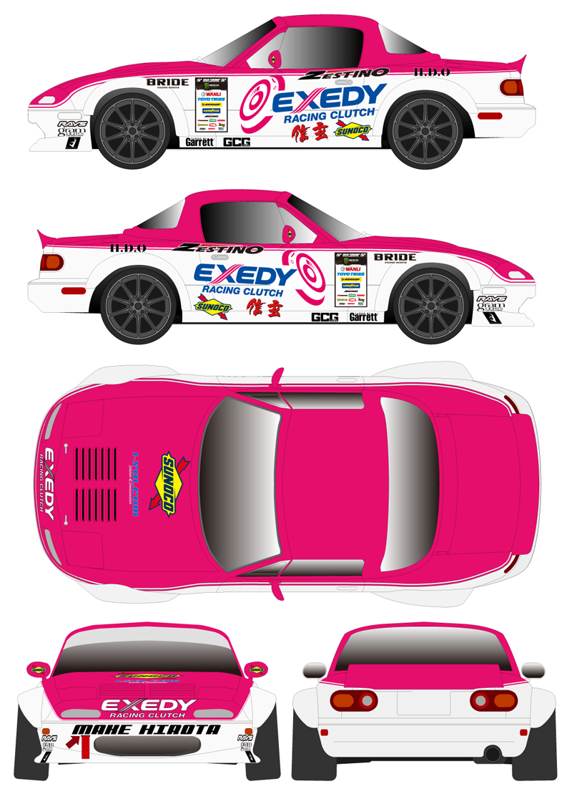

2017年 / 制作時間 10日程度 / Adobe Illustrator CS6, Photoshop CS6
クライアント企業 D1GP参戦車両のデザイン補助と、スポンサー企業に提供するための5面図を制作しました。
前年度参戦の車両（車種は違うもの）のカラーリングをベースとし、顧客の指示（スポンサーロゴの面積比等や装備品の指定）に従いつつデザイン図を制作しました
絶版パーツを使い高度に改造された車両のため外形が市販車両と大幅に違い、自力で海外サイトから参考写真を探すなどの苦労もありました。
D1GP参戦車両デザイン・資料制作
